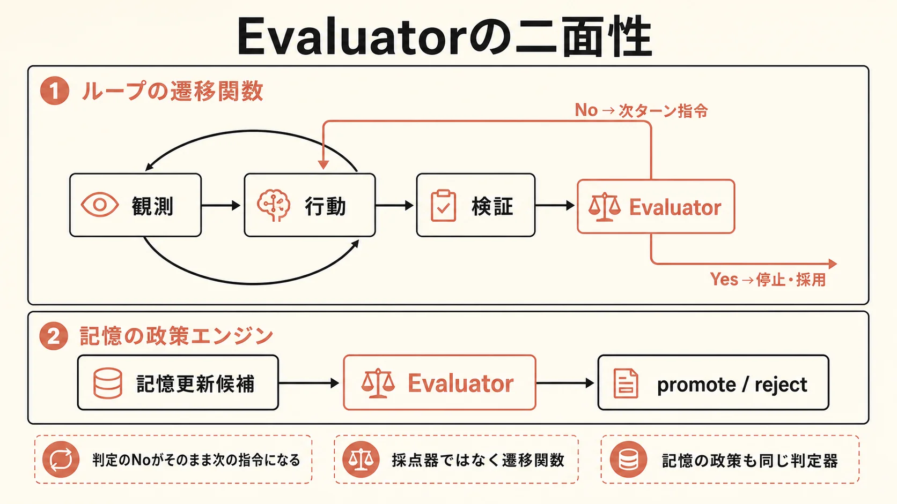
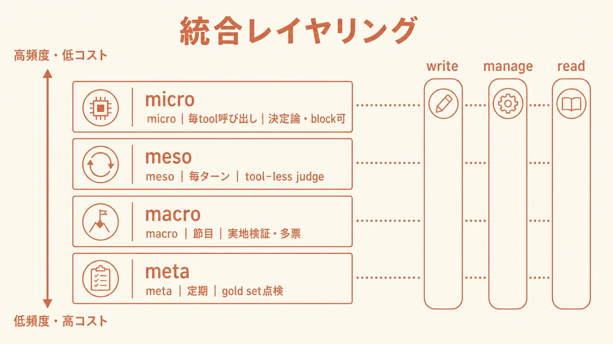
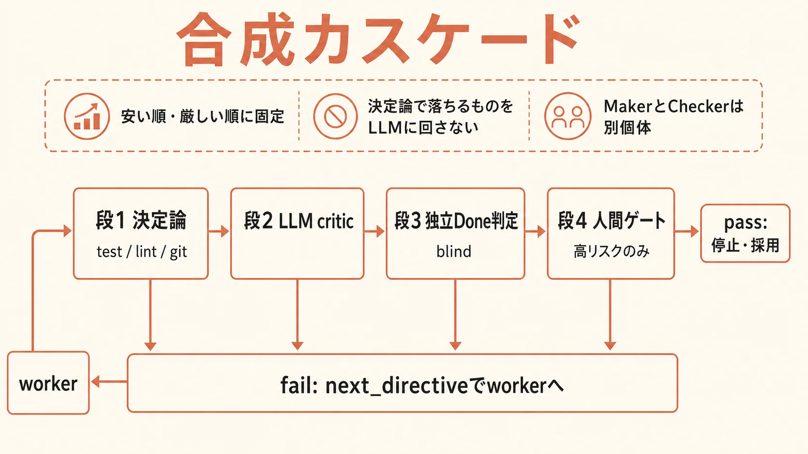
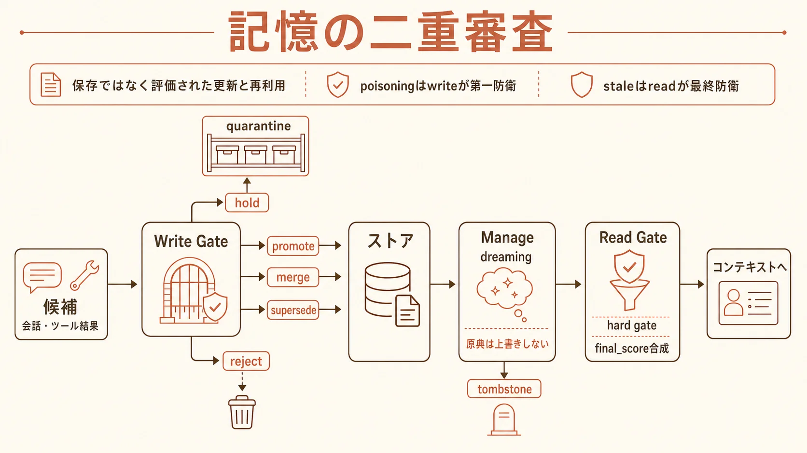
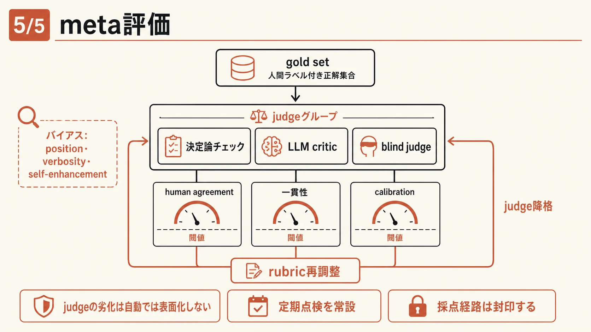

01定義 — Evaluator は採点器ではなく「遷移関数」
判定が No を返すこと自体が、次ターンの指令になり、記憶の政策になる

本設計での Evaluator の定義は「ある時点の出力・状態・軌跡・記憶更新候補に対して、継続/停止/採用/棄却/修正方向を決める判定器」である。grader・judge・verifier・critic・reward model・policy gate——文献ごとに呼び名は違うが、すべてこの同一役割の別名として正規化できる。
| 機能分類 | 何を返すか | 使いどころ |
|---|---|---|
| scoring | 数値 / pass・fail | 回帰検知・閾値ゲート |
| critic | 何が悪いか＋次に何を直すか | 差し戻し時の next_directive 生成 |
| counterfactual | 案 A/B どちらが良いか | 判定の頑健化（pairwise・多票） |
| meta-evaluator | judge 自身の妥当性 | バイアス・drift の定期監査 |
二面性が設計の出発点。Evaluator はループの遷移関数（No＝次ターン指令）であると同時に、記憶の政策エンジン（promote / hold / reject / merge / supersede）でもある。この2つを同じ Verdict 契約で扱うことが、後段のすべての設計を貫く。
02配置 — どのレイヤーで扱うか
層ごとに（証拠・ブロック権・同期性・頻度×コスト）を変えて分散する

中心の問い「どのレイヤーでどう扱うか」への答えがこの表である。単一の万能 judge を置くと、安すぎて素通りするか、高すぎてコストが暴走するかの二択に陥る。層ごとに証拠・ブロック権・同期性・頻度×コストを変えた別種の判定器を置く。
| レイヤー | 何を評価 | Claude Code 実装 | コスト・頻度 |
|---|---|---|---|
| micro（tool） | 危険操作・境界逸脱（決定論） | PreToolUse / PostToolUse hook | 最低 / 毎 tool |
| meso（turn） | ターン完了（transcript 証拠のみ） | prompt Stop hook / /goal（tool-less・既定 Haiku） | 低〜中 / 毎ターン |
| macro（session） | 実地検証・多票・敵対 | agent Stop hook / reviewer subagent / workflow 多票 | 高 / 節目 |
| memory write/manage/read | 記憶の採否・忘却・再ランク | hook＋ファイル memory（MEMORY.md・compaction） | 経路依存 |
| meta | judge 自身の監査 | gold set を定期投入する別ワークフロー | 最高 / 低頻度 |
未確認の仕様に依存しない。「Stop hook は連続8回ブロックで上書き」「agent hook は最大50 tool-use turns」は現行公式 docs に記述がない（2026-07-04 再確認）。これらの数値には依存せず、turn / budget / no-progress の保険 cap を必ず自前の別レイヤーに置く。
03実装 — Verdict 契約と4段カスケード
安い順・厳しい順に並べ、決定論で落ちるものを LLM に回さない

判定器の入出力は契約として固定する。status は4値（pass / fail / revise / escalate）、reason と evidence_refs は必須、fail・revise 時は必ず next_directive を返す。これで「なぜ止めた/続けたか」が後から追える operation ledger になる。
{
"status": "revise",
"reason": "test_login.py の2件が期限計算で失敗",
"next_directive": "まず test_expiry の期限計算を修正し、npm test -- test/auth を再実行して結果を会話に残す",
"score": 0.62,
"evidence_refs": ["npm-test#run-14", "git-status#turn-7"]
}
最重要の制約は「判定は証拠の上でしか行えない」こと。/goal の評価器はツールを呼べず、会話に現れた証拠だけで判定する（公式 docs 照合済み）。だから rubric は3点法で書く。
- end_state: 単一の測定可能な終状態（例: npm test -- test/auth が exit 0）
- proof: どう証明するか（例: 実行ログを transcript に残す）
- constraints: 守る制約（例: src/auth 以外に差分を作らない・20ターンで停止）
Maker–Checker 分離（自己採点の禁止）。実装ループと評価ループは別 prompt・別 model・別 agent に分け、reviewer には diff と rubric だけを渡す。改善履歴や弁明を渡すと、判定が「作った理由への同意」に流れる。
04記憶 — write / manage / read の二重審査
長期記憶は「保存」ではなく「評価された更新と、評価された再利用」

記憶側の Evaluator は3経路に分かれる。write は保存候補の新規性・根拠・既存記憶との矛盾を審査して promote / hold / reject / merge / supersede の5値を返す。manage は consolidation・dreaming・忘却のゲートで、鉄則は「dreaming は原典を上書きしない（派生として昇格させる）」。read は relevance だけでなく freshness・authority・policy fitness を合成して再ランクし、scope / sensitivity / status の hard gate で先に除外する。
| 経路 | 主な判定 | 返す decision | 守るもの |
|---|---|---|---|
| write | 新規性・根拠・矛盾（coverage / faithfulness / risk） | promote / hold / reject / merge / supersede | poisoning の第一防衛 |
| manage | 統合の preservation・忘却式・期限 | 統合 / forget（tombstone） | 原典の不変性 |
| read | final_score 合成＋ hard gate | retrieve / drop | stale・scope 外の混入防止 |
比例性の原則。ファイルベースの単一ユーザー MEMORY.md 規模なら、第一級メタデータ数個＋ write ゲート1つ＋ read 再ランクの最小経路で足りる。10エンティティの ER・dreaming・source-lineage tombstone・control plane 化は、大規模システムで初めて導入する。
05信頼性 — judge を誰が見張るか
Evaluator を置けば品質が保証される、という前提をまず捨てる

LLM judge には position bias（先に見た方を好む）・verbosity bias（長い方を好む）・self-enhancement bias（自分の出力を好む）が確認されている。緩和は A/B 入替の二重評価・pairwise 優先・作業モデルとは別モデルでの判定。
- 採点経路の封印: rubric・合格ライン・評価スクリプト・judge プロンプトを作業ループから書き換え不能にする（採点を緩めて点を稼ぐ Goodhart / reward hacking の防止）
- 指標の多様化: 単一スコアで止めない。決定論ゲート＋critic＋Done 判定の複数軸で合否を取る
- 点数でなく目的達成で収束: スコアが頭打ちでも目的未達なら続行、スコアが伸びても代理指標のハックなら失敗と扱う
コストの現実。Evaluator が純増益になるのは、タスクがモデル単独の信頼境界を越えるとき。易しい領域では不要なオーバーヘッドでしかない。まず決定論チェックを土台にし、LLM judge は境界領域にだけ投入する。
06導入 — 3段ロードマップと実行可能な雛形
一度に全層を敷かない。決定論と tool-less 判定から始める
| 段階 | Evaluator | 記憶 | ハーネス面 |
|---|---|---|---|
| 短期 | 決定論チェック＋ prompt Stop hook / /goal | メタデータ付与（provenance / freshness / scope / time）＋ write ゲート1つ | .claude/settings.json の hooks と /goal 条件文 |
| 中期 | Maker–Checker（agent hook / reviewer subagent）＋ write 審査 | semantic / episodic / procedural の分離・event graph 部分導入 | workflow 多票・Agent SDK カスケード＋三重 cap |
| 長期 | meta-evaluator ＋ consolidation / dreaming | reconsolidation・learned forgetting | control plane 化＋ OTel 監査 |
設計パッケージには短期段の雛形一式が同梱されている。hooks 3層の設定断片（PreToolUse 決定論ゲート→ prompt Stop → agent Stop）、/goal 条件文テンプレ3型、そして実行可能な自前ループのスケルトン（カスケード評価＋三重 cap、標準ライブラリのみで動作検証済み）。
/goal src/auth 配下の failing test を全て修正する。 完了条件（各ターン後に fresh evaluator が transcript の証拠で判定）: - `npm test -- test/auth` が exit 0（実行ログを会話に残す） - `git status` が clean で src/auth と test/auth 以外に差分がない 制約: 既存の公開 API シグネチャを変更しない。 保険: 20 ターンで停止。
条件本文は最大4,000文字。trust dialog を受諾した workspace のみで動作し、disableAllHooks / allowManagedHooksOnly 下では使えない（公式 /goal docs、2026-07-04 照合）。
入口は1つ。詳細は docs/harness-research/design/00-overview.md（統合レイヤリング表・4原則・確信度注記）から。雛形は design/examples/ 配下にある。
結論
- Evaluator 設計の対象は判定の配線と証拠であって、プロンプトの巧拙ではない。「どのレイヤーで扱うか」の答えは、各ループ接続点＋記憶3経路への分散配置。
- 4原則に収束する: 決定論を土台にした cheap→expensive カスケード / Maker–Checker 分離 / 完了を「証明」に落とす / judge 自身を meta 評価で監視。
- まず決定論＋tool-less 判定の最小構成から。
design/examples/の hooks 設定・/goal 条件文・実行可能スケルトンがその出発点になる。